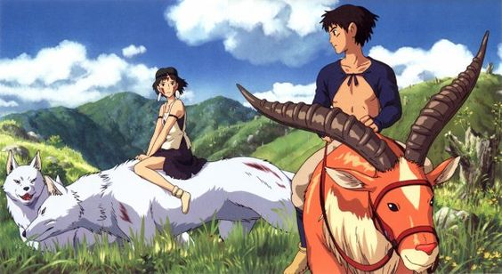
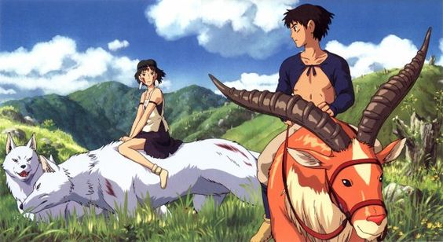

Fantastic Mr. Fox

𝙎𝙮𝙣𝙤𝙥𝙨𝙞𝙨: An urbane fox cannot resist returning to his farm raiding ways and then must help his community survive the farmers' retaliation
𝙍𝙚𝙫𝙞𝙚𝙬: sofia - they acctually never review anything now that im looking at this (4.5/5) ★★★★☆

Aftersun
𝙎𝙮𝙣𝙤𝙥𝙨𝙞𝙨: Sophie reflects on the shared joy and private melancholy of a holiday she took with her father twenty years earlier. Memories real and imagined fill the gaps between as she tries to reconcile the father she knew with the man she didn't...
𝙍𝙚𝙫𝙞𝙚𝙬 :sofia - bro did not five two fucks, not one word was said abr this movie (5/5) ★★★★★ ❤


Ritual

𝙎𝙮𝙣𝙤𝙥𝙨𝙞𝙨: A disillusioned filmmaker has an encounter with a young girl who has a ritual of repeating "Tomorrow is my birthday" everyday. He tries to communicate with her through his video camera.
𝙍𝙚𝙫𝙞𝙚𝙬: Your birthday will come the day you were born (4/5) ★★★★


Princess Mononoke
𝙎𝙮𝙣𝙤𝙥𝙨𝙞𝙨: On a journey to find the cure for a Tatarigami's curse, Ashitaka finds himself in the middle of a war between the forest gods and Tatara, a mining colony. In this quest he also meets San, the Mononoke Hime.
𝙍𝙚𝙫𝙞𝙚𝙬 : Forever in love with this one (4.5/5) ★★★★☆
 
